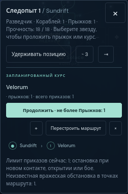
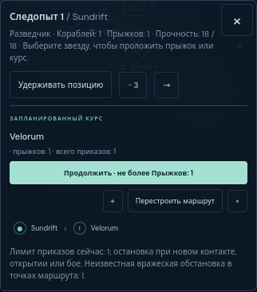
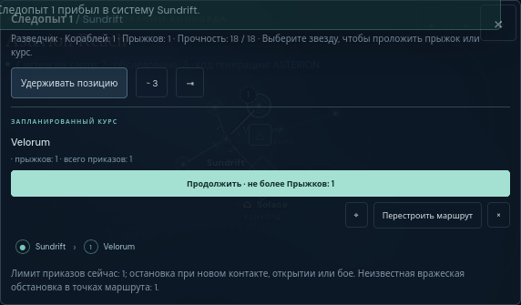

Focused final acceptance · Firefox 146.0.1 · native touch events with viewport emulation
On frozen source b9af2b96203c941cff261ccc8b2984c0432438a9 at http://127.0.0.1:43229, the Russian primary Continue action occupies its own row and all secondary controls remain visible inside the clipped map bounds. The previously clipped label is complete at all three reviewed widths.
| Viewport | Geometry | Actual behavior |
|---|---|---|
| 320 × 844 | All four controls contained | Continue, Undo, and language round trip pass |
| 390 × 844 | All four controls contained | Continue, Undo, and language round trip pass |
| 640 × 390 | All four controls contained | Continue, Undo, and language round trip pass |
Each fresh default campaign used the same ordinary flow: select Pathfinder, preview Solace → Sundrift → Velorum, plot and hold the course, select Sundrift, and move one adjacent jump. The held and moved states match the original pre-correction hashes exactly. Native Continue then reaches Velorum and spends one order and one movement. Native Undo restores the complete pre-Continue state. English–Russian switching preserves that state and the corrected Russian text.
All four buttons were measured against the map’s clipping rectangle in the held state, before Continue, after Undo, and after the language round trip. There were no uncaught page errors, HTTP responses at or above 400, or page-wide horizontal overflow. This uses Firefox hasTouch: true; it is not a physical-phone test or unsupported isMobile emulation.



Three results and exact state hashes · Original taps and equality checks · Source/build hashes · Runtime · Focused driver · Manifest.
Geometry receipts: 320, 390, 640. The driver also records the three other measured states at each width. Run node docs/mechanics-depth/firefox-review/route-layout-final/recheck.cjs against the frozen server; copy the driver to a separate directory within the repository first to preserve these receipts.
The original Firefox acceptance, wording follow-up, and original clipping finding remain unchanged; their manifests were rechecked. No mechanics or production source was edited by this reviewer. No additional flows or broad suites were run after this bounded correction check.